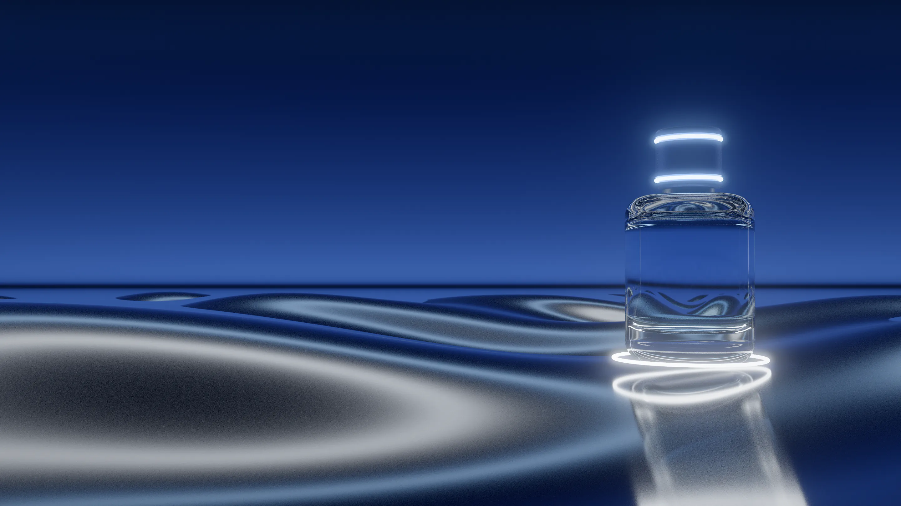
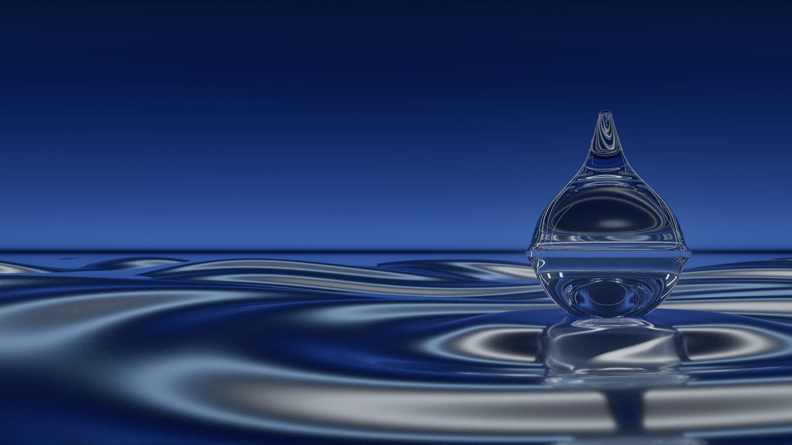

Proposta 12 · Gel blu
Scheda di progetto
Un’apertura costruita come un render da studio: un oggetto cosmetico di cristallo che si specchia in un gel blu notte, titolo semibold su tre righe e due pulsanti a pillola. Il riferimento è la slide 04 della raccolta «Hero Section of the week» di Averlo. La proposta lo traduce per un’associazione di imprese, in tre varianti con le stesse sezioni.

Riferimento
Dalla slide a Cosmetica Italia
- Nella slideNella proposta
- Anello al neon con un disco di vetro, logo di una piattaforma di tradingUn oggetto cosmetico di cristallo con anelli di luce: flacone, vasetto o goccia di siero
- Paesaggio notturno viola, colline con foschiaUn gel blu notte con riflessi bianchi: la texture di un siero, senza luoghi
- Due frasi brevi, «Rise Above the Noise. Trade With Purpose.»«La cosmetica italiana, una filiera che guarda al futuro»
- Pulsante bianco pieno e pulsante scuro«Scopri i servizi» e «Il settore in numeri», in vetro scuro
- Navigazione con «Login» e «Get started»Menu completo con «Area riservata» e «Diventa socio»
Tono
Perché non è fredda né ospedaliera
- Il blu è una notte profonda e vellutata, non un azzurro da ambulatorio, e il bianco compare solo come luce.
- Il gel e il cristallo sono materiali cosmetici, morbidi e tattili: si riconoscono come siero, crema e profumo.
- La luce è diffusa e riflessa, come in uno studio fotografico: niente bianchi pieni o superfici asettiche.
- Nessun richiamo tecnologico da trading o da crypto: testi, oggetti e materiali parlano di cosmetica e di imprese.
- Titoli grandi in Inter Tight semibold e testi ariosi: un tono diretto, non istituzionale.
Varianti
Tre aperture, una sola pagina


Le sezioni sotto l’apertura sono identiche nelle tre varianti: servizi, filiera, numeri, iniziative e appuntamenti, circolari, associarsi e footer con la mappa del sito. Nessuna linea di divisione: le parti si separano con spazio, vetro e luce.
Movimento
Cosa si muove
- 01 · APERTURALuci e gelGli anelli si accendono con un breve sfarfallio, poi il gel ondeggia lentamente sotto l’oggetto.
- 02 · SERVIZIIcone e pannello di vetroSei aree, ognuna con la sua icona. Un anello segna il tempo della rotazione, che si ferma al passaggio del mouse, e il gel dietro il vetro si sposta a ogni servizio.
- 03 · FILIERALa linea di luceScorrendo, la linea si disegna e accende le cinque tappe, dalla materia prima all’export.
- 04 · NUMERIQuattro cifre, quattro disegniSi riempiono gli anelli dell’export e dei lavoratori diretti e si accendono i punti, da 100 milioni o da dieci imprese ciascuno. Le cifre contano fino al valore.
- 05 · AGENDATre riquadri«Oggi» si calcola sulla data reale: ultime uscite, prossimi appuntamenti con i giorni che mancano e circolari per gli associati, uno accanto all’altro. La data sta in un tassello, bianco per il prossimo appuntamento.
- 06 · ASSOCIARSILa seta liquidaUn riflesso di luce attraversa il gel dietro l’invito ad associarsi.
Colore
Palette e contrasti
#040A1EFondo principale, testo bianco#0B1A45Sfumature e pannelli#1F59A1Bagliori, linee e superfici di accento#6B98FFLuci, messa a fuoco e dettagli#D3E2FFEtichette e date su scuro#FFFFFFTitoli, pulsanti pieni e lucergba(255,255,255,.78)Testi secondarirgba(255,255,255,.64)Fonti, date e noteContrasti calcolati con la formula WCAG 2.2: tutti i testi superano il livello AA (4,5:1). Nessun oro: il calore viene dalla luce e dai materiali.
Tipografia
Inter Tight, Inter e JetBrains Mono
La cosmetica italiana, una filiera che guarda al futuro
JetBrains Mono · etichette, date e fonti
Rispettate le soglie concordate: 16 px per il testo da leggere, 12 px per tutto il resto.
Qualità
Realismo, accessibilità e prestazioni
- Oggetti e gel sono render calcolati in anticipo con luce fisica (path tracing): riflessi, rifrazioni e profondità di campo vere. Nessun 3D in tempo reale.
- Nella pagina si muove solo la luce: un piccolo shader WebGL compone l’immagine accesa e quella spenta e muove il gel. Si ferma quando l’apertura non è visibile.
- Apertura desktop tra 300 e 450 KB, mobile sotto i 200 KB, con un render verticale dedicato.
- Con «riduci movimento», senza WebGL e nel canvas la pagina resta ferma, con le immagini accese e i numeri al valore finale.
- Focus visibile su tutti i comandi, servizi navigabili da tastiera, agenda in tre elenchi con le date lette per esteso.
Comune a tutte le proposte: logo ufficiale nelle proporzioni originali, contenuti di esempio dal sito pubblico al 17/11/2026, ricerca e area riservata dimostrative.